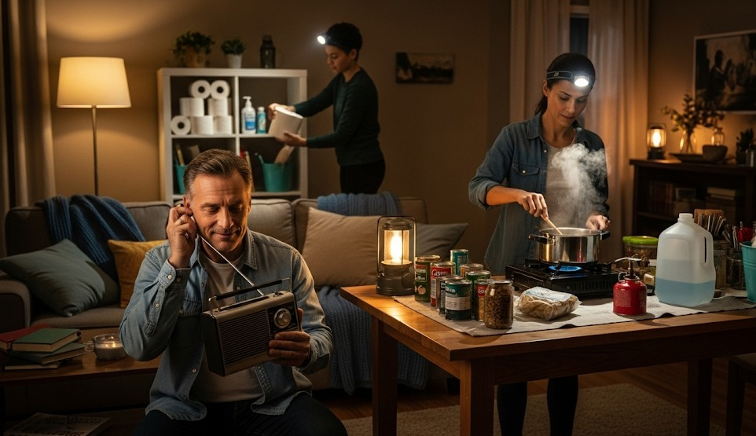

Grid‑Down Morale: Routines, Rhythm, Resilience
Objective
Prevent panic and drift during outages by setting routines, clear roles, and a daily rhythm that preserves energy.
Daily Battle Rhythm
- 07:00 — Check radios, weather, and neighbors.
- 09:00 — Water/food prep for the day.
- 12:00 — Team check‑in; task shuffle.
- 17:00 — Dinner prep; device charging.
- 20:00 — Sanitation, gear reset, lights out.
Roles
- Intel lead: filters info, posts updates.
- Logistics: water/fuel/food tracking.
- Safety: checks lights, locks, and first‑aid daily.
Micro‑Wins
Set small goals you can achieve daily (1 clean water tote, 1 room organized, 1 cooked meal).
Real Example
A duplex organized into two squads; morale rose when chores rotated and everyone knew what “done” looked like by 20:00.
Checklist
- Whiteboard + markers
- Printed day plan
- Deck of cards, books
Contingencies
- Conflict → time‑boxed cool‑down; mediator role.
After‑Action
Capture one improvement nightly; implement next morning.
← Previous | All Articles | Next →